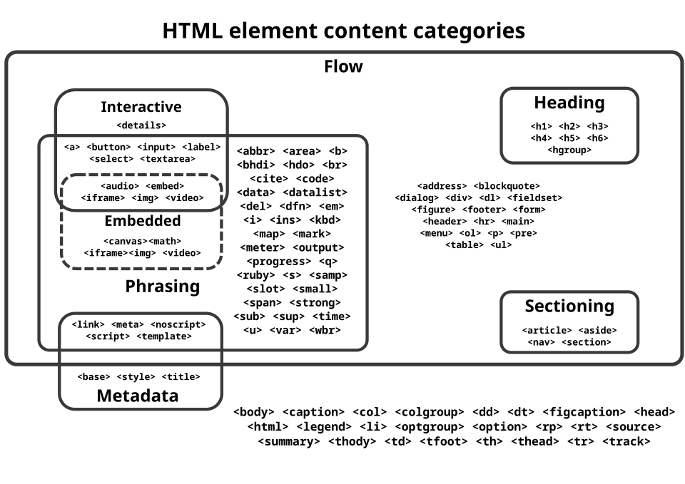

Hypertext Markup Language (HTML) is the standard markup language[a] for documents designed to be displayed in a web browser. It defines the content and structure of web content. It is often assisted by technologies such as Cascading Style Sheets (CSS) and scripting languages such as JavaScript. Web browsers receive HTML documents from a web server or from local storage and render the documents into multimedia web pages. HTML describes the structure of a web page semantically and originally included cues for its appearance. HTML elements are the building blocks of HTML pages. With HTML constructs, images and other objects such as interactive forms may be embedded into the rendered page. HTML provides a means to create structured documents by denoting structural semantics for text such as headings, paragraphs, lists, links, quotes, and other items. HTML elements are delineated by tags, written using angle brackets. Tags such as <img> and <input> directly introduce content into the page. Other tags such as <P> and its corresponding closing tag </p surround and provide information about document text and may include sub-element tags. Browsers do not display the HTML tags, but use them to interpret the content of the page. HTML can embed programs written in a scripting language such as JavaScript, which affects the behavior and content of web pages. The inclusion of CSS defines the look and layout of content. The World Wide Web Consortium (W3C), former maintainer of the HTML and current maintainer of the CSS standards, has encouraged the use of CSS over explicit presentational HTML since 1997.[3]< A form of HTML, known as HTML5, is used to display video and audio, primarily using the <canvas> element, together with JavaScript.
In 1980, the physicist Tim Berners-Lee, a contractor at CERN, proposed and prototyped ENQUIRE, a system for CERN researchers to use and share documents. In 1989, Berners-Lee wrote a memo proposing an Internet-based hypertext system.[4]Berners-Lee specified HTML and wrote the browser and server software in late 1990. That year, Berners-Lee and CERN data systems engineer Robert Cailliau collaborated on a joint request for funding, but the project was not formally adopted by CERN. In his personal notes of 1990, Berners-Lee listed "some of the many areas in which hypertext is used"; an encyclopedia is the first entry.[5] The first publicly available description of HTML was a document called "HTML Tags",[6] first mentioned on the Internet by Tim Berners-Lee in late 1991.[7][8] It describes 18 elements comprising the initial, relatively simple design of HTML. Except for the hyperlink tag, these were strongly influenced by CERN SGML, an in-house Standard Generalized Markup Language (SGML)-based documentation format at CERN. Eleven of these elements still exist in HTML 4.[9] HTML is a markup language that web browsers use to interpret and compose text, images, and other material into visible or audible web pages. Default characteristics for every item of HTML markup are defined in the browser, and these characteristics can be altered or enhanced by the web page designer's additional use of CSS. Many of the text elements are mentioned in the 1988 ISO technical report TR 9537 Techniques for using SGML, which describes the features of early text formatting languages such as that used by the RUNOFF command developed in the early 1960s for the CTSS (Compatible Time-Sharing System) operating system. These formatting commands were derived from the commands used by typesetters to manually format documents. However, the SGML concept of generalized markup is based on elements (nested annotated ranges with attributes) rather than merely print effects, with separate structure and markup. HTML has been progressively moved in this direction with CSS. Berners-Lee considered HTML to be an application of SGML. It was formally defined as such by the Internet Engineering Task Force (IETF) with the mid-1993 publication of the first proposal for an HTML specification, the "Hypertext Markup Language (HTML)" Internet Draft by Berners-Lee and Dan Connolly, which included an SGML document type definition to define the syntax.[10][11] The draft expired after six months, but was notable for its acknowledgment of the NCSA Mosaic browser's custom tag for embedding in-line images, reflecting the IETF's philosophy of basing standards on successful prototypes. Similarly, Dave Raggett's competing Internet Draft, "HTML+ (Hypertext Markup Format)", from late 1993, suggested standardizing already-implemented features like tables and fill-out forms.[12] After the HTML and HTML+ drafts expired in early 1994, the IETF created an HTML Working Group. In 1995, this working group completed "HTML 2.0", the first HTML specification intended to be treated as a standard against which future implementations should be based.[13] Further development under the auspices of the IETF was stalled by competing interests. Since 1996, the HTML specifications have been maintained, with input from commercial software vendors, by the World Wide Web Consortium (W3C).[14] In 2000, HTML became an international standard (ISO/IEC 15445:2000). HTML 4.01 was published in late 1999, with further errata published through 2001. In 2004, development began on HTML5 in the Web Hypertext Application Technology Working Group (WHATWG), which became a joint deliverable with the W3C in 2008, and was completed and standardized on 28 October 2014.[15]
HTML 3.2[16] was published as a W3C Recommendation. It was the first version developed and standardized exclusively by the W3C, as the IETF had closed its HTML Working Group on 12 September 1996.[17] Initially code-named "Wilbur",[18] HTML 3.2 dropped math formulas entirely, reconciled overlap among various proprietary extensions and adopted most of Netscape's visual markup tags. Netscape's blink element and Microsoft's marquee element were omitted due to a mutual agreement between the two companies.[14] A markup for mathematical formulas similar to that of HTML was standardized 14 months later in MathML.
HTML 4.0[19] was published as a W3C Recommendation. It offers three variations:
Initially code-named "Cougar",[18] HTML 4.0 adopted many browser-specific element types and attributes, but also sought to phase out Netscape's visual markup features by marking them as deprecated in favor of style sheets. HTML 4 is an SGML application conforming to ISO 8879 – SGML.[20]
24 April 1998HTML 4.0[21] was reissued with minor edits without incrementing the version number.
24 December 1999HTML 4.01[22] was published as a W3C Recommendation. It offers the same three variations as HTML 4.0 and its last errata[23] were published on 12 May 2001.
May 2000ISO/IEC 15445:2000[24] ("ISO HTML", based on HTML 4.01 Strict) was published as an ISO/IEC international standard.[25] In the ISO, this standard is in the domain of the ISO/IEC JTC 1/SC 34 (ISO/IEC Joint Technical Committee 1, Subcommittee 34 – Document description and processing languages).[24] After HTML 4.01, there were no new versions of HTML for many years, as the development of the parallel, XML-based language XHTML occupied the W3C's HTML Working Group.
Main article: HTML5
28 October 2014HTML5[26] was published as a W3C Recommendation.[27]
1 November 2016HTML 5.1[28] was published as a W3C Recommendation.[29][30]
14 December 2017HTML 5.2[31] was published as a W3C Recommendation.[32][33]
HTML Tags,[7] an informal CERN document listing 18 HTML tags, was first mentioned in public.
June 1992First informal draft of the HTML DTD,[34] with seven subsequent revisions (15 July , 6 August, 18 August, 17 November, 18 November, 20 November, and 22 November)[35][36][37]
November 1992HTML DTD 1.1 (the first with a version number, based on RCS revisions, which start with 1.1 rather than 1.0), an informal draft[37] June 1993
Hypertext Markup Language[38] was published by the IETF IIIR Working Group as an Internet Draft (a rough proposal for a standard). It was replaced by a second version[39] one month later.
November 1993HTML+ was published by the IETF as an Internet Draft and was a competing proposal to the Hypertext Markup Language draft. It expired in July 1994.[40]
November 1994First draft (revision 00) of HTML 2.0 published by the IETF[41] (called "HTML 2.0" starting with revision 02[42]), that finally led to the publication of RFC 1866 in November 1995.[43]
April 1995 (authored March 1995)HTML 3.0[44] was proposed as a standard to the IETF, but the proposal expired five months later (28 September 1995)[45] without further action. It included many of the capabilities that were in Raggett's HTML+ proposal, such as support for tables, text flow around figures, and the display of complex mathematical formulas.[45] W3C began development of its own Arena browser as a test bed for HTML 3 and Cascading Style Sheets,[46][47][48] but HTML 3.0 did not succeed for several reasons. The draft was considered very large at 150 pages and the pace of browser development, as well as the number of interested parties, had outstripped the resources of the IETF.[14] Browser vendors, including Microsoft and Netscape at the time, chose to implement different subsets of HTML 3's draft features as well as to introduce their own extensions to it.[14] (See browser wars.) These included extensions to control stylistic aspects of documents, contrary to the "belief [of the academic engineering community] that such things as text color, background texture, font size, and font face were definitely outside the scope of a language when their only intent was to specify how a document would be organized."[14] Dave Raggett, who has been a W3C Fellow for many years, has commented for example: "To a certain extent, Microsoft built its business on the Web by extending HTML features."[14]
 January 2008
January 2008
HTML5 was published as a Working Draft by the W3C.[49] Although its syntax closely resembles that of SGML, HTML5 has abandoned any attempt to be an SGML application and has explicitly defined its own "html" serialization, in addition to an alternative XML-based XHTML5 serialization.[50]
2011 HTML5-Last CallOn 14 February 2011, the W3C extended the charter of its HTML Working Group with clear milestones for HTML5. In May 2011, the working group advanced HTML5 to "Last Call", an invitation to communities inside and outside W3C to confirm the technical soundness of the specification. The W3C developed a comprehensive test suite to achieve broad interoperability for the full specification by 2014, which was the target date for recommendation.[51] In January 2011, the WHATWG renamed its "HTML5" living standard to "HTML". The W3C nevertheless continued its project to release HTML5.[52]
2012 HTML5 – Candidate RecommendationIn July 2012, WHATWG and W3C decided on a degree of separation. W3C will continue the HTML5 specification work, focusing on a single definitive standard, which is considered a "snapshot" by WHATWG. The WHATWG organization will continue its work with HTML5 as a "Living Standard". The concept of a living standard is that it is never complete and is always being updated and improved. New features can be added but functionality will not be removed.[53] In December 2012, W3C designated HTML5 as a Candidate Recommendation.[54] The criterion for advancement to W3C Recommendation is "two 100% complete and fully interoperable implementations".[55]
2014 HTML5 – Proposed Recommendation and RecommendationIn September 2014, W3C moved HTML5 to Proposed Recommendation.[56] On 28 October 2014, HTML5 was released as a stable W3C Recommendation,[57] meaning the specification process is complete.[58]
XHTML versionsMain article: XHTML
XHTML is a separate language that began as a reformulation of HTML 4.01 using
See also: HTML5 § W3C and WHATWG conflict On 28 May 2019, the W3C announced that WHATWG would be the sole publisher of the HTML and DOM standards.[66][67][68][69] The W3C and WHATWG had been publishing competing standards since 2012. While the W3C standard was identical to the WHATWG in 2007 the standards have since progressively diverged due to different design decisions.[70] The WHATWG "Living Standard" had been the de facto web standard for some time.[71] The W3C periodically reviews and publishes snapshots of the WHATWG HTML specification as W3C Recommendations.[72]
HTML markup consists of several key components, including those called tags (and their attributes), character-based data types, character references and entity references. HTML tags most commonly come in pairs like <h1> and </h1>, although some represent empty elements and so are unpaired, for example <img> The first tag in such a pair is the start tag, and the second is the end tag (they are also called opening tags and closing tags). Another important component is the HTML document type declaration, which triggers standards mode rendering. The following is an example of the classic "Hello, World!" program:
<!DOCTYPE html>The text between <html> and </html> describes the web page, and the text between <body> and </body> is the visible page content. The markup text <title>This is a title</title>#> defines the browser page title shown on browser tabs and window titles and the tag <div> defines a division of the page used for easy styling. Between <head> and </head>, a <meta> element can be used to define webpage metadata. The Document Type Declaration <<DOCTYPE html> is for HTML5. If a declaration is not included, various browsers will revert to "quirks mode" for rendering.[73]

Main article: HTML element HTML element content categories HTML documents imply a structure of nested HTML elements. These are indicated in the document by HTML tags, enclosed in angle brackets.[74][better source needed] In the simple, general case, the extent of an element is indicated by a pair of tags: a "start tag" <p> and "end tag" </p>. The text content of the element, if any, is placed between these tags. Tags may also enclose further tag markup between the start and end, including a mixture of tags and text. This indicates further (nested) elements, as children of the parent element. The start tag may also include the element's attributes within the tag. These indicate other information, such as identifiers for sections within the document, identifiers used to bind style information to the presentation of the document, and for some tags such as the <img> used to embed images, the reference to the image resource in the format like this: <img src="example.com/example.jpg"> Some elements, such as the line break <br> do not permit any embedded content, either text or further tags. These require only a single empty tag (akin to a start tag) and do not use an end tag. Many tags, particularly the closing end tag for the very commonly used paragraph element <p>, are optional. An HTML browser or other agent can infer the closure for the end of an element from the context and the structural rules defined by the HTML standard. These rules are complex and not widely understood by most HTML authors. The general form of an HTML element is therefore: <tag attribute1="value1" attribute2="value2">''content''<. Some HTML elements are defined as empty elements and take the form <tag attribute1="value1" attribute2="value2">. Empty elements may enclose no content, for instance, the <br> tag or the inline <img> tag. The name of an HTML element is the name used in the tags. The end tag's name is preceded by a slash character /. If a tag has no content, an end tag is not allowed. If attributes are not mentioned, default values are used in each case.
HTML headings are defined with the <H1> to <H6> tags with H1 being the highest (or most important) level and H6 the least:
HTML escape sequence examples |
|||||
|---|---|---|---|---|---|
| NAME | DECIMAL | HEXADECIMAL | RESULT | DESCRIPTION | NOTES |
| & | & | & | & | AMPERSAND | |
| < | < | 6 | < | LESS THAN | |
| > | > | < | > | GREATER THAN | |
| " | " | " | " | BOUBLE QUOTE | |
| ' | ' | ' | ' | SINGLE QUOTE | |
| |   |   | SPACE | ||
| © | © | © | © | COPYRIGHT | |
| ® | ® | ® | ® | RESISTERED TREADMARK | |
| † | † | &x2020; | † | DAGGER | |
| >‡ | >‡ | >&x2021; | ‡ | DOUBLE DAGGER | Names are case-sensitive and may have synonyms. |
| ™ | ™ | ™ | ™ | TRADEMARK |
HTML defines several data types for element content, such as script data and stylesheet data, and a plethora of types for attribute values, including IDs, names, URIs, numbers, units of length, languages, media descriptors, colors, character encodings, dates and times, and so on. All of these data types are specializations of character data.
Document type declarationHTML documents are required to start with a document type declaration (informally, a "doctype"). In browsers, the doctype helps to define the rendering mode—particularly whether to use quirks mode. The original purpose of the doctype was to enable the parsing and validation of HTML documents by SGML tools based on the document type definition (DTD). The DTD to which the DOCTYPE refers contains a machine-readable grammar specifying the permitted and prohibited content for a document conforming to such a DTD. Browsers, on the other hand, do not implement HTML as an application of SGML and as consequence do not read the DTD. HTML5 does not define a DTD; therefore, in HTML5 the doctype declaration is simpler and shorter:[84]
<!DOCTYPE html> An example of an HTML 4 doctype <!DOCTYPE HTML PUBLIC "-//W3C//DTD HTML 4.01//EN" "https://www.w3.org/TR/html4/strict.dtd"> This declaration references the DTD for the "strict" version of HTML 4.01. SGML-based validators read the DTD in order to properly parse the document and to perform validation. In modern browsers, a valid doctype activates standards mode as opposed to quirks mode. In addition, HTML 4.01 provides Transitional and Frameset DTDs, as explained below. The transitional type is the most inclusive, incorporating current tags as well as older or "deprecated" tags, with the Strict DTD excluding deprecated tags. The frameset has all tags necessary to make frames on a page along with the tags included in transitional type.[85]Main article: Semantic HTML Semantic HTML is a way of writing HTML that emphasizes the meaning of the encoded information over its presentation (look). HTML has included semantic markup from its inception,[86] but has also included presentational markup, such as <font>, <i>, and <center> tags. There are also the semantically neutral div and span tags. Since the late 1990s, when Cascading Style Sheets were beginning to work in most browsers, web authors have been encouraged to avoid the use of presentational HTML markup with a view to the separation of content and presentation.[87] In a 2001 discussion of the Semantic Web, Tim Berners-Lee and others gave examples of ways in which intelligent software "agents" may one day automatically crawl the web and find, filter, and correlate previously unrelated, published facts for the benefit of human users.[88] Such agents are not commonplace even now[when?], but some of the ideas of Web 2.0, mashups and price comparison websites may be coming close[citation needed]. The main difference between these web application hybrids and Berners-Lee's semantic agents lies in the fact that the current aggregation and hybridization of information is usually designed by web developers, who already know the web locations and the API semantics of the specific data they wish to mash, compare and combine. An important type of web agent that does crawl and read web pages automatically, without prior knowledge of what it might find, is the web crawler or search-engine spider. These software agents are dependent on the semantic clarity of web pages they find as they use various techniques and algorithms to read and index millions of web pages a day and provide web users with search facilities without which the World Wide Web's usefulness would be greatly reduced. In order for search engine spiders to be able to rate the significance of pieces of text they find in HTML documents, and also for those creating mashups and other hybrids as well as for more automated agents as they are developed, the semantic structures that exist in HTML need to be widely and uniformly applied to bring out the meaning of the published text.[89] Presentational markup tags are deprecated in current HTML and XHTML recommendations. The majority of presentational features from previous versions of HTML are no longer allowed as they lead to poorer accessibility, higher cost of site maintenance, and larger document sizes.[90] Good semantic HTML also improves the accessibility of web documents (see also Web Content Accessibility Guidelines). For example, when a screen reader or audio browser can correctly ascertain the structure of a document, it will not waste the visually impaired user's time by reading out repeated or irrelevant information when it has been marked up correctly.
HTML documents can be delivered by the same means as any other computer file. However, they are most often delivered either by HTTP from a web server or by email.
HTTPMain article: HTTP The World Wide Web is composed primarily of HTML documents transmitted from web servers to web browsers using the Hypertext Transfer Protocol (HTTP). However, HTTP is used to serve images, sound, and other content, in addition to HTML. To allow the web browser to know how to handle each document it receives, other information is transmitted along with the document. This meta data usually includes the MIME type (e.g., text/html or application/xhtml+xml) and the character encoding (see Character encodings in HTML). In modern browsers, the MIME type that is sent with the HTML document may affect how the document is initially interpreted. A document sent with the XHTML MIME type is expected to be well-formed XML; syntax errors may cause the browser to fail to render it. The same document sent with the HTML MIME type might be displayed successfully since some browsers are more lenient with HTML. The W3C recommendations state that XHTML 1.0 documents that follow guidelines set forth in the recommendation's Appendix C may be labeled with either MIME Type.[91] XHTML 1.1 also states that XHTML 1.1 documents should[92] be labeled with either MIME type.[93],
HTML e-mailMain article: HTML email Most graphical email clients allow the use of a subset of HTML (often ill-defined) to provide formatting and semantic markup not available with plain text. This may include typographic information like colored headings, emphasized and quoted text, inline images and diagrams. Many such clients include both a GUI editor for composing HTML e-mail messages and a rendering engine for displaying them. Use of HTML in e-mail is criticized by some because of compatibility issues, because it can help disguise phishing attacks, because of accessibility issues for blind or visually impaired people, because it can confuse spam filters and because the message size is larger than plain text.
Naming conventionsThe most common filename extension for files containing HTML is .html. A common abbreviation of this is .htm, which originated because some operating systems limit file extensions to three letters.[94]
HTML ApplicationMain article: HTML Application An HTML Application (HTA; file extension .hta) is a Microsoft Windows application that uses HTML and Dynamic HTML in a browser to provide the application's graphical interface. A regular HTML file is confined to the security model of the web browser's security, communicating only to web servers and manipulating only web page objects and site cookies. An HTA runs as a fully trusted application and therefore has more privileges, like creation/editing/removal of files and Windows Registry entries. Because they operate outside the browser's security model, HTAs cannot be executed via HTTP, but must be downloaded (just like an EXE file) and executed from local file system.,
Since its inception, HTML and its associated protocols gained acceptance relatively quickly. However, no clear standards existed in the early years of the language. Though its creators originally conceived of HTML as a semantic language devoid of presentation details,[95] practical uses pushed many presentational elements and attributes into the language, driven largely by the various browser vendors. The latest standards surrounding HTML reflect efforts to overcome the sometimes chaotic development of the language[96] and to create a rational foundation for building both meaningful and well-presented documents. To return HTML to its role as a semantic language, the W3C has developed style languages such as CSS and XSL to shoulder the burden of presentation. In conjunction, the HTML specification has slowly reined in the presentational elements. There are two axes differentiating various variations of HTML as currently specified: SGML-based HTML versus XML-based HTML (referred to as XHTML) on one axis, and strict versus transitional (loose) versus frameset on the other axis.
SGML-based versus XML-based HTMLOne difference in the latest[when?] HTML specifications lies in the distinction between the SGML-based specification and the XML-based specification. The XML-based specification is usually called XHTML to distinguish it clearly from the more traditional definition. However, the root element name continues to be "html" even in the XHTML-specified HTML. The W3C intended XHTML 1.0 to be identical to HTML 4.01 except where limitations of XML over the more complex SGML require workarounds. Because XHTML and HTML are closely related, they are sometimes documented in parallel. In such circumstances, some authors conflate the two names as (X)HTML or X(HTML).
Like HTML 4.01, XHTML 1.0 has three sub-specifications: strict, transitional, and frameset.
Aside from the different opening declarations for a document, the differences between an HTML 4.01 and XHTML 1.0 document—in each of the corresponding DTDs—are largely syntactic. The underlying syntax of HTML allows many shortcuts that XHTML does not, such as elements with optional opening or closing tags, and even empty elements which must not have an end tag. By contrast, XHTML requires all elements to have an opening tag and a closing tag. XHTML, however, also introduces a new shortcut: an XHTML tag may be opened and closed within the same tag, by including a slash before the end of the tag like this:
. The introduction of this shorthand, which is not used in the SGML declaration for HTML 4.01, may confuse earlier software unfamiliar with this new convention. A fix for this is remove the slash preceding the closing angle bracket, as such:
.[97]
To understand the subtle differences between HTML and XHTML, consider the transformation of a valid and well-formed XHTML 1.0 document that adheres to Appendix C (see below) into a valid HTML 4.01 document. Making this translation requires the following steps:
Those are the main changes necessary to translate a document from XHTML 1.0 to HTML 4.01. To translate from HTML to XHTML would also require the addition of any omitted opening or closing tags. Whether coding in HTML or XHTML it may just be best to always include the optional tags within an HTML document rather than remembering which tags can be omitted. A well-formed XHTML document adheres to all the syntax requirements of XML. A valid document adheres to the content specification for XHTML, which describes the document structure. The W3C recommends several conventions to ensure an easy migration between HTML and XHTML[98]. The following steps can be applied to XHTML 1.0 documents only:
By carefully following the W3C's compatibility guidelines, a user agent should be able to interpret the document equally as HTML or XHTML. For documents that are XHTML 1.0 and have been made compatible in this way, the W3C permits them to be served either as HTML (with a text/html MIME type), or as XHTML (with an application/xhtml+xml or application/xml MIME type). When delivered as XHTML, browsers should use an XML parser, which adheres strictly to the XML specifications for parsing the document's contents.